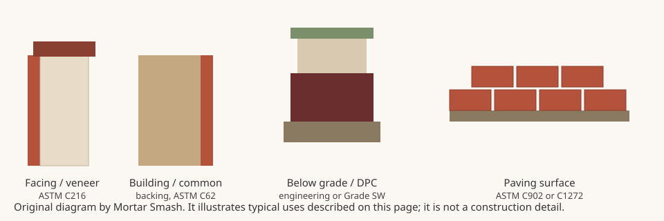

Mortar Smash › Trade guides › Which bricks for which jobs
Short answer
Use facing brick (ASTM C216) where the wall will be seen, building or common brick (ASTM C62) for backing and hidden work, a high-strength low-absorption engineering brick for damp-proof courses, retaining walls, groundworks and manholes, hollow brick (ASTM C652) where large cores or a lighter facing unit are required, and a paving specification (ASTM C902 or C1272) for the wearing surface of a path or road. Pick the durability grade for the exposure, then the appearance type. Always follow the project specification and local code.
Match the specification to the job
The Brick Industry Association's Technical Note 9A says brick selection starts with the intended use. US model codes point to ASTM standards, and each standard covers a family of jobs rather than a colour or brand name.
| Job | Typical unit | Usual specification |
|---|---|---|
| Visible walls and brick veneer | Facing brick | ASTM C216 (Canada: CSA A82) |
| Backing, hidden or purely structural work where looks do not matter | Building brick (US) or common brick (UK) | ASTM C62 |
| Lighter facing units, or reinforced work with large cores | Hollow brick | ASTM C652 |
| Adhered thin brick finishes | Thin veneer brick | ASTM C1088 |
| Paths, patios and light traffic paving | Pedestrian and light-traffic pavers | ASTM C902 |
| Streets and heavy vehicle paving | Heavy vehicular pavers | ASTM C1272 |
| Damp-proof courses, retaining walls, groundworks and manholes (UK practice) | Engineering brick, Class B or Class A | Specified by strength class, not by a facing standard |
BIA 9A describes facing brick as intended for structural and nonstructural masonry, including veneer, where appearance matters. Building brick is for structural and nonstructural work where appearance is not a requirement, and is typically used as backing. Hollow brick can serve as building or facing brick but has a greater void area; most hollow brick is used as facing in anchored veneer, and units with very large cores are used in reinforced brickwork. Thin veneer brick has normal face dimensions and a reduced thickness for adhered veneer. Paving brick is the wearing surface of a clay paving system and is specified separately for pedestrian and light traffic or for heavy vehicles.
Residential fireplace firebox brick, chemical-resistant units, sewer and manhole brick, and industrial floor brick have their own ASTM designations (including C1261 for residential firebox brick). Technical Note 9A lists them and then sets them aside as special uses, so this page does not add performance figures for those products.
UK facing, engineering and common bricks
The Modern Masonry Alliance Housing Easy Guide on bricks, which points readers to Brick Development Association guidance, groups UK clay bricks by use.
- Facing bricks are the most widely used type in UK housing and are typically specified for colour and texture on visible external walls.
- Engineering bricks are specified for physical properties rather than looks: high compressive strength and low water absorption. Typical jobs are damp-proof courses, retaining walls, groundworks and manholes. Class A has a compressive strength greater than 125 N/mm²; Class B is greater than 75 N/mm² and is more commonly used. Both are usually smooth, often red and sometimes blue.
- Common bricks are now the least common type in the UK. They suit internal or 'fill' work that will be hidden, and they generally have lower strength and less resistance to water and frost than facing or engineering bricks.
Concrete bricks are available in the same facing, common and engineering formats and, according to the same guide, can be used internally and externally, including below ground, where strength and durability come first. Reclaimed bricks can look right on a repair, but frost resistance and consistency are hard to prove for a whole load; the guide recommends the BDA comment on reclaimed clay bricks and notes that new bricks made to a stated European Standard give a known performance level.
Once the unit is chosen, match the mortar to the brick and the exposure. See which mortar for brickwork and Types N, S, M and O. For counts and mix quantities, use the brick calculator and mortar calculator.
Do not chase strength alone
BIA Technical Note 9B says most brick now produced have compressive strengths from about 3,000 psi (20.7 MPa) to over 20,000 psi (138 MPa), averaging around 10,000 psi (68.9 MPa), and that achieving enough compressive strength is seldom a problem. It warns not to give up durability and bond just to get a higher strength figure. The same note says high-suction brick (over 30 grams of water per minute per 30 square inches) should be wetted 3 to 24 hours before laying so the surface can dry, and very low-suction brick should be kept dry on site.

Which bricks for which jobs FAQ
What is the difference between facing brick and building brick?
In US practice, facing brick (ASTM C216) is made for walls where appearance matters, including veneer. Building brick (ASTM C62) is for structural or nonstructural work where appearance is not a requirement and is typically used as backing. The two also carry different appearance rules: C216 classifies Type (FBX, FBS or FBA) for tolerances and chippage; C62 has no appearance type.
When should I use engineering bricks?
In UK practice, engineering bricks are chosen for strength and low water absorption rather than looks. The Modern Masonry Alliance guide lists damp-proof courses, retaining walls, groundworks and manholes as typical jobs. Class B (greater than 75 N/mm²) is more common; Class A (greater than 125 N/mm²) is the higher strength class. Use the class and exposure rating named in the specification, not a habit of using blue bricks on every plinth.
Are common bricks all right on an outside wall?
Usually not if they will stay wet and freeze. The UK guide describes common bricks as suited to internal or fill work that will be hidden, with lower strength and less resistance to water and frost than facing or engineering bricks. In the US, Grade NW building brick is typically confined to interiors or to places protected from water and freezing, according to BIA Technical Note 9B.
What brick should I use for a path or driveway?
Use a paving specification, not leftover wall brick. BIA Technical Note 9A points pedestrian and light-traffic paving to ASTM C902 and heavy vehicular paving to ASTM C1272. Those standards classify pavers for durability and traffic, because the brick is the wearing surface.
Can I use hollow brick as facing?
Yes. BIA Technical Note 9A says hollow brick may be used as building or facing brick, and that most hollow brick is used as facing in anchored veneer. Units with very large cores are used in reinforced brickwork. Hollow brick is specified under ASTM C652, with a greater void area than solid facing brick.
Should I specify reclaimed bricks for a garden wall?
Only after checking durability. The Modern Masonry Alliance guide says reclaimed bricks are often chosen for their weathered look, but frost resistance can be hard to assess for a whole consignment, even after a sample freeze-thaw test. New bricks made to a stated European Standard give a known performance level. If the job is severely exposed, start with an F2, S2 unit or the equivalent grade required by the specification.
Sources
- BIA Technical Note 9A, Specifications for and Classification of Brick (October 2007)
- BIA Technical Note 9B, Manufacturing, Classification, and Selection of Brick, Selection, Part 3 (December 2003)
- Modern Masonry Alliance, Housing Easy Guide: Brick
Figures and uses are quoted or condensed from the sources above, which were read on 11 November 2026. Codes and project specifications differ by country and job; where they conflict with this page, follow them.
Published 11 November 2026 by Mortar Smash. General information only, not engineering or code advice.